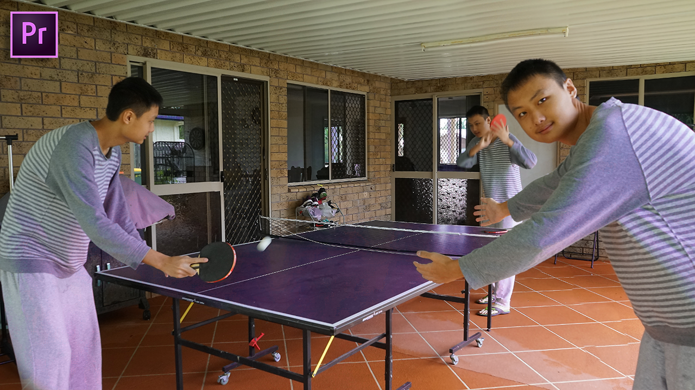

What is TexNiance
Technology. Money. Progress. The Holy Trilogy of influencing the economy, society, and you. With technology achieving massive advancements second by second, you must stay on top or you will be left behind. In this battle to stay on top, I have created a YouTube channel, to educate myself and provide the newest and unbiased information to my viewers. Welcome to TexNiance.
Videos
How to Clone Yourself In Premier Pro and Photoshop 
What are Negative Interest Rates
How Much Money Do Youtubers Make (Analytics)
More About me
I am a 15 year old high-school student in Australia who is extremely interested in economics and finance. Making money is an addiction to me so I constantly stuff my brain with financial knowledge from books and YouTube videos. I am also obessed with how technology works and its relative implications in the material world. With the Texniance Youtube channel, I create videos that condense what I have learnt in the week and share it to my viewers.